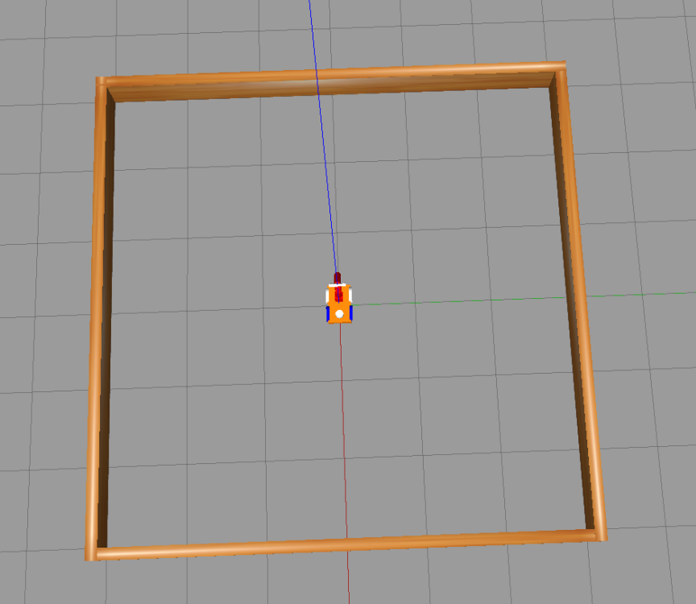
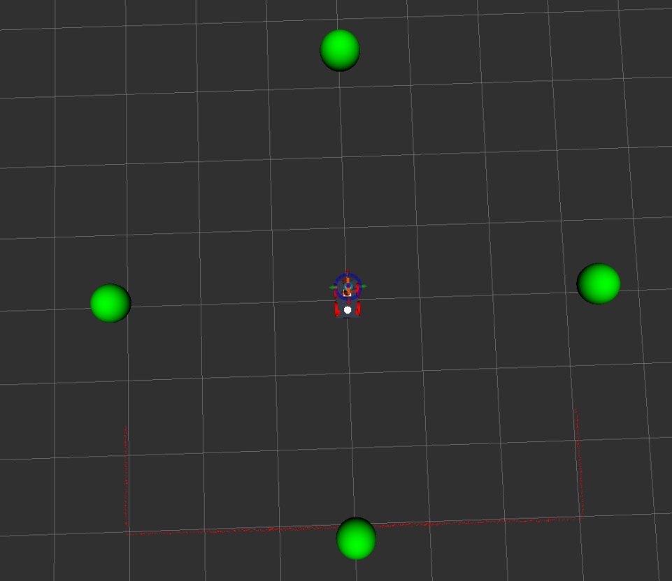

README – the RoboCLuedo Project – ROUND 2
Francesco Ganci - S4143910 - A.A.2021/2022
Contents
- README – the RoboCLuedo Project – ROUND 2

What you can find in this readme
This readme goes through the design ideas under the project.
expected behaviour of the project
main design ideas
Software Architecture components overview
Software Architecture communication protocols overview
The parts of the architecture are deeply detailed inside this documentation, see the Packages Documentation section.
Introduction – RCL#2
The main aim of the RCL#2 project is to implement the control system of a robot playing a game freely inspired to the classic board game CLuedo.
In particular, the system controls a 4-wheeled robot with one manipulator. The robot explores the surroundings in search of any clue that could be determinant to understand who is the killer, what is the weapon of the murder, and where the poor Dr. Black has been killed. The robot uses a OWL-based system to reason about the clues, collecting, putting together, and finding a one possible solution. The arbiter of the game is th so-called Oracle, which knows the solution, and can be interrogated when the robot is ready to announce the murderer.
(But, differently from the real game, the robot can propose as many solution as it wants, without loosing the game after a wrong proposal…)
Technical Goals – RCL#2
First of all, the main aim is to create a better architecture than in the previous RCL#1 project, which is not so flexible (mainly due to unclear requirements, concerning in particular the interface of the Oracle which clearly must be external to the project): this did lead to twrow away many parts of the preivous version of the project, except for the aRMOR part which is reusable almost completely, with a little of message updates. In particular, the project should represent a basis for the third iteration of the project: the strategy is to implement an architecture which can be flexible enough to allow the re-usage of almost all the parts, with very little changes.
Moreover, as in the other projects, a great care has been given to the metodology of work: not only writing the code, but also using and developing its documentation during the work. A big effort has been made as well, in documenting about the technologies involved in the implementation of this project, trying to find a way to make it work which could work also on other platforms as much as possible. Finally, the project comes with a rich module testing allowing to ensure the functioning of each module, either single or in combination with other elements of the architecture. See the official project documentation for further informations.
Features – RCL#2
manipulator control using MoveIt with well-known poses
navigation using a multi-layer implementation (to gain flexibility for later updates)
usage of a OWL-based ontology for elaborating CLuedo hints and combining them into hypotheses and then possible solutions of the mystery
usage of a double-layered planning strategy involving a simple state-machine at high level and ROSPlan for the low-level planning
the project introduces a policy made of landmarks: the main idea is that the problem can be solved by “steps” (the so-called landmarks) that are macro-steps to be expanded by ROSPlan in sequences of actions to apply, depending on the situation
this choice allows to have a part of the architecture not taking into account the details of the PDDL model, making an abstraction upon the real structure of the PDDL
Expected Behaviour – RCL#2
Here’s how the robot should behave, just as a short overview of how the RCL#2 project works.
ERL#2 Environment
Our RoboCLuedo starts in the middle of a little square room (6m per 6m). Here’s how the environment appears on Gazebo:

Abit outside the arena, there are four markers, that in this simulation are the points where the robot can find the hints. When the robot touches a marker, it receives a hint that it can store and elaborate inside its ontology. Here’s the environment as seen in RViz, showing the positions of the markers:

Expected Behaviour
During the searching phase, there’s a common sequence of operations repeated:
go in front o a marker
“touch” the marker (it triggers the oracle to send a hint)
put back the robot in its home position
then the robot selects another waypoint, and the cycle restarts. When the robot succeeded in obtaining at least one CONSISTENT hypothesis, the robot goes at the center of the arena to propose its solution to the Oracle. Due to the fact that the Oracle could return a corrupted hint, or also a repeated one, the robotcould take a lot of time to formulate a acceptable hypothesis.
SW Arch – Components
The project is a rich composition of many packages, resulting in a complex, heavy centralized architecture. It behaves as a classical hyerarchical architecture: sense, then plan, then act. So far, the ‘sense’ part is simulated by the Oracle sending the hints: in afuture development, the robot should get the hints from the environment using a vision system.
highlights of the architecture
Here are the concept I used during each phase of the job:
separation : Great care has been given in guaranteeing the neat separation between components
for instance, the RCL ROSPlan package doesn’t interact directly with the motion controllers: it exposes a client to implement instead, which is called each time a ROSPlan action needs to perform the navigation. It requires a bridge node, that is a delegate between the ROSPlan framework and the real navigation system.
abstraction : the interfaces provided by each package aims at hiding the implementation details, enhancing a standard, intuitive way to use each package
in particular, most of them provide a number of directives, i.e. spcecific operations an external node expects to be implemented in a way that the node don’t want to know. The aRMOR package along with this project is a good example of this.
flexibility and adaptability : the neat separation between packages, alongside with the abstraction, lets the architecture to be more flexible and easily updatable.
module testing : it is a fundamental concept traversing all the lifecycle of this project since RCL#1
The project contains a rich module testing section, allowing the developer to not wasting time in looking for bugs in a very complex, demanding architecture. Each package can be tested independently, and most of the times with just a bash script. Sometimes also some code has been provided in order to test the project.
Developing a rich debug system is a necessity with such a large project. You cannot go on if you can’t be sure at 100% that the components “at the bottom” work as expected. It helped me during the development phase hundreds of times, even revealing bugs whicc was very difficult to spot simply running the proejct.
Components – simplified schema
It highlights the centralized structure of the architecture. Each component here corresponds to a package used by the project.
The mission manager contains the bridges above-mentioned (there are bridges for both the navigation and the manipulation), as well as the main node providing a high-layer planning by means of landmarks and aRMOR operations.
Components – extended schema
This schema wants to give an idea of how much the architecture of the project is extended. Inside it there are pointed out many ideas inside RCL#2:
the ROSPlan side is a sort of mikrokosmos of components. The system uses the idea of landmarks, implementing the “low level planning system”. See the official documentation, and in particular the design of the PDDL, for further details about such a planning policy.
The problem solution strategy is divided into three “steps”, called landmakrs in the terminology of the project:
REPLAN : tidy the rosplan kb up, maing it ready for a new iteration of the strategy
COLLECT : move the robot in the environment, using a topological localisation integrated with the ROSPlan PDDL model
SOLVE : the final step, introduce the “assumed” solution of the case and check it; the robot moves towards the center before introducing the solution
the movement controller package implements both the navigation system and the manipulation system.
the navigation system is divided into many layers (hierarchical architecture inside): the behavioural section, containing
the elementary behaviours directly influencing the motion of the robot,
combined into composite behaviours which group the elementary behaviours to make more structured motion strategies
and the motion controllers, components of the navigation manager (implemented as classes inside that node) providing a “cozy” abstraction for the navigation system: a external node sees onl a simple interface, without having the need to deal with the details of the implementation of the navigation system.
Here’s the diagram:
SW Arch – communication protocols overview
Here are the temporal diagrams of the project, describing just the essential steps performed in communicating between packages
Foreword – diagrams conventions
the package temporal diagram represents how different independe packages work together
the node temporal diagram is more specific and goes deeper into how the nodes communicate each other
the square note is used for exposing scenarios and hypotheses
the rhomboid annotation underlines an operation inside the node or the package
manipulation – synchronous manipulation
Mission manager workflow
Here’s the state diagram of the mission manager. Please take into account that the states REPLAN, COLLECT, and SOLVE, are landmarks; see the documentation about the robocluedo_rosplan package for further informations.
The diagram doesn’t show the status FAULT_COUNT which, as the name suggests, counts the unexpected (and unexplained) failures. The node has a counter of failures, and when the counter reaches zero, the node closes wuthout succeeding the mission. This strategy could be replaced, or altered, in future updates.
ROSPlan landmarks – temporal diagrams
The mission manager makes a high level planning, whereas the RCL ROSPlan framework performs a mid-level planning: the mission manager divides the mission into a policy made of some macro-steps, and the ROSPlan package decides how to perform such macrosteps expanding them in a sequence of actions according to the situation registered in the ROSPlan knowledge base.
This leads to a more elaborated architecture for this framework, but also makes more flexible the behaviour of the system.
The following diagrams shows not only what happens when a landmark is requested, but also how the MISSION_MANAGER carries out the ellaboration of the landmarks.
REPLAN landmark
About COLLECT and SOLVE landmarks
the procedure is always the same for the other landmarks: the mission manager splits the landmark execution in two phases in the same way. Obviously, if something could go wrong, the procedure would be shorter, and the MISSION_MANAGER would spend a bit to understand what went wrong.
working hypotheses
Few assumptions are needed, since the architecture tries to interact with general-purpose frameworks, using standard ways for interacting with the low level system. The most important assumption is that the rules of the game are satisfied, otherwise the behaviour of the robot is not determined.
About the environment
the robot moves on a flat floor: always room can be reached by moving the roobot on the same floor (the house has only one, perfectly flat, floor)
environment completely free, without obstacles, for instance a small flat arena as in this assignment
the topology of the environment is well known, as well as the cartesian coordinates of the waypoints
there’s a node publishing the cartesian positions of the markers
and the topological map of the environment is known in advance
About the reasoning
the mystery can be solved at least with a two-steps policy COLLECT, SOLVE
it is mostly due to the rules of the game
if the game changes, the policy should be reviewed accordingly to the new rules
in particular, if the problem cannot be reduced in a combination of two general steps, the planner shall provide other landmarks
a solution exists
i.e. the oracle works fine
Limitations
the robot can work only in well-known environments. It doesn’t support free exploration
the free exploration requires the robot to choose by itself the waypoints, maybe based on the measurements from the laser sensor, or other systems
currently, there’s no such a functionality
no secure communication error handling.
there could be a big deal try to run the achitecture distributed on a WiFi network: when a service call fails for instance, most of the nodes of the project are not able to cope with that in a acceptable situation. Most of times the node simply closes
overcoming this problem requires a long work of code review and, sometimes, re-design
Improvements and future develops
Create a distributed version of the architecture, with multiple robots. Thanks to the strict separation between the components applied during the design and then during the implementation, the architecture can be extended to many robots inside the same environment. Some components can be centralized, such as the part concerning the ontology. The main problem in this case could be the to find a tradeoff between the bandwidth required to enable the robots to communicate with the central system, and the computational capabilities onboard.
Architectural Review of the ROSPlan package. Currently the knowledge base interface inside the robocluedo_rosplan package is of no use for nodes outside. There are many situations in which having directives exposed by the knowledge base interface can be useful. For instance, the code of the pipeline manager, currently too much complex, can be simplified a lot distributing the capability to explain a failure on two nodes. And, finally, the capability to write inside the ontology, taking into account the characteristics of the PDDL problem, is always useful. For these reasons, the ROSPlan implementation should be reviewed in order to provide a better supporto to the working cycle. The current package can be considered a first prototype, and it shall be formalized from the architectural point of view, and reimplemented, taking into account also the directives and the features given the PDDL model.
Manipulation Controller. The manipulation approch can be heavily reviewed. The robot currently uses a very raw implementation of a moveit-based controller using well-known poses only. The cartesian plan should be introduced. Even a end effector should be defined.
Navigation manager and controllers. The current structure can be improved a lot. The current navigation manager is very near to be a prototype: the approach works quite good, even if the problem is too much simple to see any relevant advantage from the approach with navigation controllers, but it should be implemented in a more tidy way. For instance, the system shall be divided into several files, instead of a long one a bit lasagna-code style.
URDF model improvements. The current module, although it works quite good, it is too much basic. The physic can be improved, regulating with more attention the inertias of the components. Also the controllers can be improved. A code review on the model could help as well.
Adding a real graphical interface. The project completely lacks of a decent user interface, which is, in my opinion, one of the most serious limitations of the project. The user, and the developer as well, should be enabled to understand what’s wrong using a GUI instead of many prints on a console. A GUI allows to see the status of the entire project at a glance, instead of reading endless logs and console messages trying to grasp something. Also the image visualisation should be improved, allowing the user to select one camera to visualise, for instance.

Author and Contacts
A project designed and developed by Francesco Ganci (S4143910)
Email : S4143910@studenti.unige.it